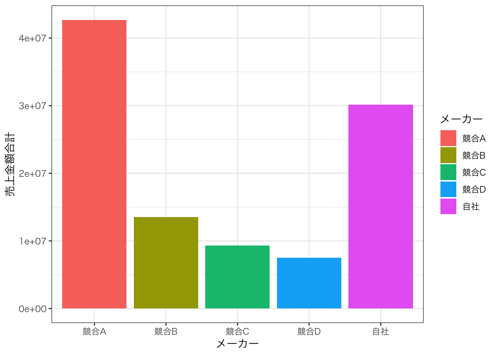

pacman::p_load(tidyverse, readxl, tidyplots, ggthemes, kableExtra)2 第1回 売上をまとめた表
2.1 この章で使うファイルとパッケージ
ファイル
chp1.xlsx
パッケージ
-
tidyverse: データの読み込み，加工，可視化に使うパッケージ -
readxl: Excelファイルを読み込むためのパッケージ
この章で使うファイルは作業ディレクトリのdata/フォルダにいれておきましょう。
2.2 Rの準備
- Rをインストールしておきましょう。
- RStudioかVS Codeをインストールしておきましょう。
- Rのパッケージ
tidyverseをインストールしておきましょう。 - 作業ディレクトリを設定しておきましょう。
これらの内容が分からない場合は，R入門の資料や本を参照してください。
2.3 データの読み込み
まずはreadxlパッケージを使ってデータchp1.xlsxを読み込んでみましょう。 このExcelファイルのシートの一覧を表示してみます。
readxl::excel_sheets("data/chp1.xlsx")[1] "いつものPOSデータ" "ピボットテーブル" "表1-2・図1-19"
[4] "表1-4・図1-28・図1-29" "表1-5・図1-32" "表1-6"
[7] "図1-38" excel_sheets()関数はデフォルトで1番目のシートを読み込みます。 「いつものPOSデータ」を読み込みたいので，特に指定せずにread_excel()関数を使って読み込みます。
df <- readxl::read_excel("data/chp1.xlsx")
head(df) # 戦闘6行を表示| レシート番号 | 日付 | 曜日 | 時間 | 性別 | 年代 | メーカー | 商品名 | 単価 | 個数 | 金額 |
|---|---|---|---|---|---|---|---|---|---|---|
| R000001 | 2023-01-02 | 月 | 10 | 女性 | 30代 | 競合A | おいしい緑茶 | 160 | 2 | 320 |
| R000001 | 2023-01-02 | 月 | 10 | 女性 | 30代 | 競合B | 静岡の緑茶 | 170 | 2 | 340 |
| R000002 | 2023-01-02 | 月 | 10 | 男性 | 60歳以上 | 競合A | おいしい濃茶 | 160 | 2 | 320 |
| R000002 | 2023-01-02 | 月 | 10 | 男性 | 60歳以上 | 競合B | 静岡の緑茶 | 170 | 4 | 680 |
| R000003 | 2023-01-02 | 月 | 10 | 男性 | 50代 | 競合C | ほうじ茶 | 140 | 1 | 140 |
| R000004 | 2023-01-02 | 月 | 10 | 女性 | 50代 | 競合D | ウーロン茶 | 140 | 3 | 420 |
どんな変数があるのか確認するにはnames()関数を使います。
names(df) [1] "レシート番号" "日付" "曜日" "時間" "性別"
[6] "年代" "メーカー" "商品名" "単価" "個数"
[11] "金額" データの型や概要を確認するにはstr()関数を使います。
str(df)tibble [374,090 × 11] (S3: tbl_df/tbl/data.frame)
$ レシート番号: chr [1:374090] "R000001" "R000001" "R000002" "R000002" ...
$ 日付 : POSIXct[1:374090], format: "2023-01-02" "2023-01-02" ...
$ 曜日 : chr [1:374090] "月" "月" "月" "月" ...
$ 時間 : num [1:374090] 10 10 10 10 10 10 10 10 10 10 ...
$ 性別 : chr [1:374090] "女性" "女性" "男性" "男性" ...
$ 年代 : chr [1:374090] "30代" "30代" "60歳以上" "60歳以上" ...
$ メーカー : chr [1:374090] "競合A" "競合B" "競合A" "競合B" ...
$ 商品名 : chr [1:374090] "おいしい緑茶" "静岡の緑茶" "おいしい濃茶" "静岡の緑茶" ...
$ 単価 : num [1:374090] 160 170 160 170 140 140 160 150 150 160 ...
$ 個数 : num [1:374090] 2 2 2 4 1 3 1 2 3 4 ...
$ 金額 : num [1:374090] 320 340 320 680 140 420 160 300 450 640 ...dplyr::glimpse()関数を使うと，データの概要をより見やすく表示できます。
dplyr::glimpse(df)Rows: 374,090
Columns: 11
$ レシート番号 <chr> "R000001", "R000001", "R000002", "R000002", "R000003", "R…
$ 日付 <dttm> 2023-01-02, 2023-01-02, 2023-01-02, 2023-01-02, 2023-01-…
$ 曜日 <chr> "月", "月", "月", "月", "月", "月", "月", "月", "月", "月…
$ 時間 <dbl> 10, 10, 10, 10, 10, 10, 10, 10, 10, 10, 10, 10, 10, 10, 1…
$ 性別 <chr> "女性", "女性", "男性", "男性", "男性", "女性", "女性", "…
$ 年代 <chr> "30代", "30代", "60歳以上", "60歳以上", "50代", "50代", "…
$ メーカー <chr> "競合A", "競合B", "競合A", "競合B", "競合C", "競合D", "競…
$ 商品名 <chr> "おいしい緑茶", "静岡の緑茶", "おいしい濃茶", "静岡の緑茶…
$ 単価 <dbl> 160, 170, 160, 170, 140, 140, 160, 150, 150, 160, 160, 17…
$ 個数 <dbl> 2, 2, 2, 4, 1, 3, 1, 2, 3, 4, 1, 2, 2, 1, 1, 2, 1, 2, 3, …
$ 金額 <dbl> 320, 340, 320, 680, 140, 420, 160, 300, 450, 640, 160, 34…この表から，変数が11個，観測値が374090個あることが分かります。
2.4 データの属性を確認する
データの属性を確認するために，summary()関数を使ってみましょう。
summary(df) レシート番号 日付 曜日
Length:374090 Min. :2023-01-02 00:00:00.00 Length:374090
Class :character 1st Qu.:2023-05-09 00:00:00.00 Class :character
Mode :character Median :2023-07-28 00:00:00.00 Mode :character
Mean :2023-07-16 10:09:45.75
3rd Qu.:2023-09-23 00:00:00.00
Max. :2023-12-31 00:00:00.00
時間 性別 年代 メーカー
Min. :10.00 Length:374090 Length:374090 Length:374090
1st Qu.:13.00 Class :character Class :character Class :character
Median :16.00 Mode :character Mode :character Mode :character
Mean :15.57
3rd Qu.:18.00
Max. :21.00
商品名 単価 個数 金額
Length:374090 Min. :140.0 Min. : 1.000 Min. : 140.0
Class :character 1st Qu.:150.0 1st Qu.: 1.000 1st Qu.: 160.0
Mode :character Median :160.0 Median : 2.000 Median : 280.0
Mean :154.5 Mean : 1.783 Mean : 275.7
3rd Qu.:160.0 3rd Qu.: 2.000 3rd Qu.: 320.0
Max. :170.0 Max. :14.000 Max. :2100.0 この表より，
- レシート番号は文字列
- 日付は2023年1月2日から2023年12月31日まで
- 曜日は文字列
- 時間は10:00から21:00まで
- 性別は文字列
- 年代も文字列
- メーカーも文字列
- 商品名も文字列
- 単価は数値で，140〜170
- 個数は数値で，1〜14
- 金額は数値で，140〜2100
となっています。 このうち，曜日，性別，年代，メーカー，商品名はカテゴリカルデータであるため，因子型に変換しておきましょう。
もう一度，summary()関数を使ってデータの属性を確認してみましょう。
summary(df) レシート番号 日付 曜日 時間
Length:374090 Min. :2023-01-02 00:00:00.00 月:36468 Min. :10.00
Class :character 1st Qu.:2023-05-09 00:00:00.00 火:44573 1st Qu.:13.00
Mode :character Median :2023-07-28 00:00:00.00 水:52418 Median :16.00
Mean :2023-07-16 10:09:45.75 木:37703 Mean :15.57
3rd Qu.:2023-09-23 00:00:00.00 金:66894 3rd Qu.:18.00
Max. :2023-12-31 00:00:00.00 土:74754 Max. :21.00
日:61280
性別 年代 メーカー 商品名
女性:274659 20歳未満:19102 競合A:144742 ウーロン茶 :31905
男性: 99431 20代 :49716 競合B: 46516 おいしい濃茶:59910
30代 :81065 競合C: 39190 おいしい緑茶:84832
40代 :74773 競合D: 31905 ほうじ茶 :39190
50代 :93194 自社 :111737 静岡の緑茶 :46516
60歳以上:56240 濃い茶 :45982
緑茶 :65755
単価 個数 金額
Min. :140.0 Min. : 1.000 Min. : 140.0
1st Qu.:150.0 1st Qu.: 1.000 1st Qu.: 160.0
Median :160.0 Median : 2.000 Median : 280.0
Mean :154.5 Mean : 1.783 Mean : 275.7
3rd Qu.:160.0 3rd Qu.: 2.000 3rd Qu.: 320.0
Max. :170.0 Max. :14.000 Max. :2100.0
すると，曜日，性別，年代，メーカー，商品名がカテゴリー変数として認識され，カテゴリーごとの個数が表示されています。 たとえば，メーカー変数が自社の場合だけを抽出するには，dplyr::filter()関数を使います。
| レシート番号 | 日付 | 曜日 | 時間 | 性別 | 年代 | メーカー | 商品名 | 単価 | 個数 | 金額 |
|---|---|---|---|---|---|---|---|---|---|---|
| R000005 | 2023-01-02 | 月 | 10 | 女性 | 50代 | 自社 | 濃い茶 | 150 | 2 | 300 |
| R000005 | 2023-01-02 | 月 | 10 | 女性 | 50代 | 自社 | 緑茶 | 150 | 3 | 450 |
| R000010 | 2023-01-02 | 月 | 10 | 女性 | 50代 | 自社 | 濃い茶 | 150 | 2 | 300 |
| R000010 | 2023-01-02 | 月 | 10 | 女性 | 50代 | 自社 | 緑茶 | 150 | 1 | 150 |
| R000011 | 2023-01-02 | 月 | 10 | 男性 | 20代 | 自社 | 緑茶 | 150 | 1 | 150 |
| R000012 | 2023-01-02 | 月 | 10 | 女性 | 20代 | 自社 | 緑茶 | 150 | 1 | 150 |
2.5 基礎集計でデータの傾向をチェック
メーカーごとの売上金額合計を示す表を作成してみましょう。 Excelでピボットテーブルを使う手続が教科書で解説されていますが，Rだとdplyrパッケージを使って簡単にできます。
| メーカー | 売上金額合計 |
|---|---|
| 競合A | 42695520 |
| 競合B | 13537440 |
| 競合C | 9289700 |
| 競合D | 7486080 |
| 自社 | 30126150 |
これだけです。 キレイな表にするなら，knitr::kable()関数とkableExtraパッケージを使うといいでしょう。
df |>
dplyr::group_by(メーカー) |>
dplyr::summarise(売上金額合計 = sum(金額)) |>
dplyr::arrange(desc(売上金額合計)) |>
knitr::kable(
format = "html",
caption = "表1-2 メーカーごとの売上金額"
) |>
kableExtra::kable_styling(
bootstrap_options = c("striped")
)| メーカー | 売上金額合計 |
|---|---|
| 競合A | 42695520 |
| 自社 | 30126150 |
| 競合B | 13537440 |
| 競合C | 9289700 |
| 競合D | 7486080 |
次に，各メーカーのどの商品が，平均何円で売られているのか，を調べてみましょう。
df |>
dplyr::group_by(メーカー, 商品名) |> # メーカーと商品名でグループ化
dplyr::summarise(平均単価 = mean(単価)) |> # 平均単価を計算
dplyr::arrange(メーカー, desc(平均単価)) |> # メーカーでソート
knitr::kable(
format = "html",
caption = "表1−3 商品ごとの単価"
) |>
kableExtra::kable_styling(
bootstrap_options = c("striped")
)`summarise()` has grouped output by 'メーカー'. You can override using the
`.groups` argument.| メーカー | 商品名 | 平均単価 |
|---|---|---|
| 競合A | おいしい濃茶 | 160 |
| 競合A | おいしい緑茶 | 160 |
| 競合B | 静岡の緑茶 | 170 |
| 競合C | ほうじ茶 | 140 |
| 競合D | ウーロン茶 | 140 |
| 自社 | 濃い茶 | 150 |
| 自社 | 緑茶 | 150 |
2.6 資料作成に必要なデータを取り出す
データ全体における売上金額と売上個数を計算して，各月と各時間帯にの売上金額を計算してみる。
自社製品ごとの個数と金額を計算してみましょう。
df |>
filter(メーカー == "自社") |> # 自社製品だけを抽出
group_by(商品名) |>
summarise(
売上金額合計 = sum(金額),
売上個数合計 = sum(個数)
) |>
arrange(desc(売上金額合計))| 商品名 | 売上金額合計 | 売上個数合計 |
|---|---|---|
| 緑茶 | 18057150 | 120381 |
| 濃い茶 | 12069000 | 80460 |
各月ごとの売上金額を計算してみましょう。 日付変数の型を確認します。
class(df$日付)[1] "POSIXct" "POSIXt" POSIXct POSIXt という日付型のデータです。 この変数日付から月を取り出すには，lubridateパッケージを使います。 日付データは2023-05-14 UTCといった形式で格納されているため，lubridate::month()関数を使って月を取り出します。
df_month_sales <- df |>
filter(メーカー == "自社") |>
mutate(月 = lubridate::month(日付, label = TRUE)) |>
group_by(月) |> # 月ごとにグループ化
summarise(売上金額合計 = sum(金額)) |>
arrange(月)
df_month_sales |>
knitr::kable(
format = "html",
caption = "表1−5 自社商品の月ごとの売上金額"
) |>
kableExtra::kable_styling(
bootstrap_options = c("striped")
)| 月 | 売上金額合計 |
|---|---|
| 1 | 1577250 |
| 2 | 1317900 |
| 3 | 1809300 |
| 4 | 2238750 |
| 5 | 2506050 |
| 6 | 2288550 |
| 7 | 3844350 |
| 8 | 4231950 |
| 9 | 3599550 |
| 10 | 2888250 |
| 11 | 2140800 |
| 12 | 1683450 |
各時間帯ごとの売上金額を計算してみましょう。
df_time_sales <- df |>
filter(メーカー == "自社") |>
group_by(時間) |>
summarise(売上金額合計 = sum(金額)) |>
arrange(時間)
df_time_sales |>
knitr::kable(
format = "html",
caption = "表1−6 自社商品の時間帯ごとの売上金額"
) |>
kableExtra::kable_styling(
bootstrap_options = c("striped")
)| 時間 | 売上金額合計 |
|---|---|
| 10 | 1506600 |
| 11 | 2070750 |
| 12 | 2942400 |
| 13 | 2729550 |
| 14 | 2108700 |
| 15 | 2740050 |
| 16 | 3033150 |
| 17 | 3617700 |
| 18 | 3038550 |
| 19 | 2710950 |
| 20 | 2124900 |
| 21 | 1502850 |
2.7 集計結果をグラフで可視化
可視化はRの得意分野です。 ggplot2パッケージを使って，いろんなグラフで表示してみましょう。
メーカー別売上金額を棒グラフにします。
df_maker_sales |>
ggplot() + aes(x = メーカー, y = 売上金額合計, fill = メーカー) +
geom_col() + theme_bw(base_family = "HiraKakuPro-W3")
月別売上高を折れ線グラフにします。
df_month_sales |>
ggplot() + aes(x = 月, y = 売上金額合計, group = 1) +
geom_line() + geom_point() +
theme_bw(base_family = "HiraKakuPro-W3")時間帯別売上高を棒グラフにします。